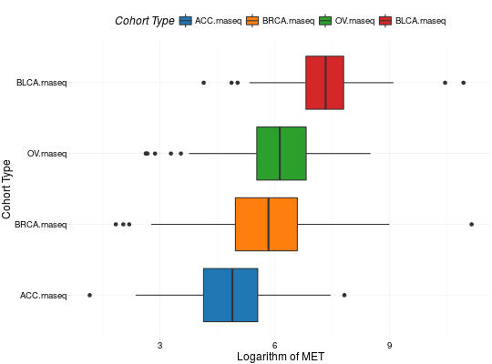
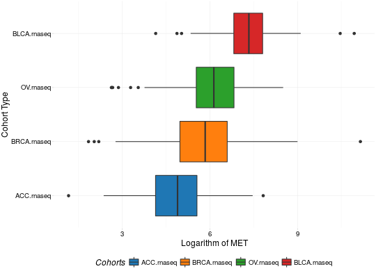
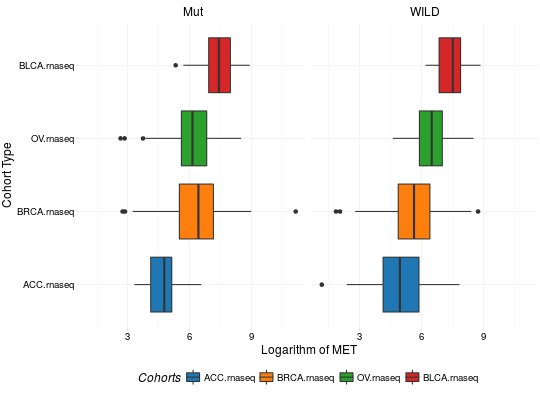
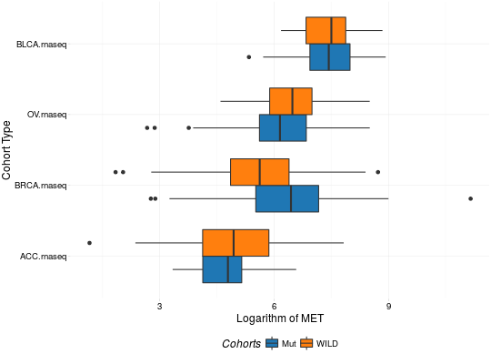

Create Boxplots for TCGA Datasets
Usage
boxplotTCGA(data, x, y, fill = x, coord.flip = TRUE, facet.names = NULL, ylab = y, xlab = x, legend.title = xlab, legend = "top", ...)
Arguments
- data
- A data.frame from TCGA study containing variables to be plotted.
- x
- A character name of variable containing groups.
- y
- A character name of continous variable to be plotted.
- fill
- A character names of fill variable. By default, the same as
x. - coord.flip
- Whether to flip coordinates.
- facet.names
- A character of length maximum 2 containing names of variables to produce facets. See examples.
- ylab
- The name of y label. Remember about
coord.flip. - xlab
- The name of x label. Remember about
coord.flip. - legend.title
- A character with legend's title.
- legend
- A character specifying legend position. Allowed values are one of c("top", "bottom", "left", "right", "none"). Default is "top" side position. to remove the legend use legend = "none".
- ...
- Further arguments passed to geom_boxplot.
Description
Function creates boxplots (geom_boxplot) for TCGA Datasets.
Issues
If you have any problems, issues or think that something is missing or is not clear please post an issue on https://github.com/RTCGA/RTCGA/issues.
Examples
library(RTCGA) library(RTCGA.rnaseq)Loading required package: knitr# perfrom plot library(dplyr)Attaching package: ‘dplyr’ The following objects are masked from ‘package:stats’: filter, lag The following objects are masked from ‘package:base’: intersect, setdiff, setequal, unionexpressionsTCGA(ACC.rnaseq, BLCA.rnaseq, BRCA.rnaseq, OV.rnaseq, extract.cols = "MET|4233") %>% rename(cohort = dataset, MET = `MET|4233`) %>% #cancer samples filter(substr(bcr_patient_barcode, 14, 15) == "01") -> ACC_BLCA_BRCA_OV.rnaseq boxplotTCGA(ACC_BLCA_BRCA_OV.rnaseq, "cohort", "MET")
boxplotTCGA(ACC_BLCA_BRCA_OV.rnaseq, "cohort", "log1p(MET)")
boxplotTCGA(ACC_BLCA_BRCA_OV.rnaseq, "reorder(cohort,log1p(MET), median)", "log1p(MET)")
boxplotTCGA(ACC_BLCA_BRCA_OV.rnaseq, "reorder(cohort,log1p(MET), max)", "log1p(MET)")
boxplotTCGA(ACC_BLCA_BRCA_OV.rnaseq, "reorder(cohort,log1p(MET), median)", "log1p(MET)", xlab = "Cohort Type", ylab = "Logarithm of MET")
boxplotTCGA(ACC_BLCA_BRCA_OV.rnaseq, "reorder(cohort,log1p(MET), median)", "log1p(MET)", xlab = "Cohort Type", ylab = "Logarithm of MET", legend.title = "Cohorts")
boxplotTCGA(ACC_BLCA_BRCA_OV.rnaseq, "reorder(cohort,log1p(MET), median)", "log1p(MET)", xlab = "Cohort Type", ylab = "Logarithm of MET", legend.title = "Cohorts", legend = "bottom")
## facet example library(RTCGA.mutations) library(dplyr) mutationsTCGA(BRCA.mutations, OV.mutations, ACC.mutations, BLCA.mutations) %>% filter(Hugo_Symbol == 'TP53') %>% filter(substr(bcr_patient_barcode, 14, 15) == "01") %>% # cancer tissue mutate(bcr_patient_barcode = substr(bcr_patient_barcode, 1, 12)) -> ACC_BLCA_BRCA_OV.mutations mutationsTCGA(BRCA.mutations, OV.mutations, ACC.mutations, BLCA.mutations) -> ACC_BLCA_BRCA_OV.mutations_all ACC_BLCA_BRCA_OV.rnaseq %>% mutate(bcr_patient_barcode = substr(bcr_patient_barcode, 1, 15)) %>% filter(bcr_patient_barcode %in% substr(ACC_BLCA_BRCA_OV.mutations_all$bcr_patient_barcode, 1, 15)) %>% # took patients for which we had any mutation information # so avoided patients without any information about mutations mutate(bcr_patient_barcode = substr(bcr_patient_barcode, 1, 12)) %>% # strin_length(ACC_BLCA_BRCA_OV.mutations$bcr_patient_barcode) == 12 left_join(ACC_BLCA_BRCA_OV.mutations, by = "bcr_patient_barcode") %>% #joined only with tumor patients mutate(TP53 = ifelse(!is.na(Variant_Classification), "Mut", "WILD")) %>% select(cohort, MET, TP53) -> ACC_BLCA_BRCA_OV.rnaseq_TP53mutations boxplotTCGA(ACC_BLCA_BRCA_OV.rnaseq_TP53mutations, "reorder(cohort,log1p(MET), median)", "log1p(MET)", xlab = "Cohort Type", ylab = "Logarithm of MET", legend.title = "Cohorts", legend = "bottom", facet.names = c("TP53"))
boxplotTCGA(ACC_BLCA_BRCA_OV.rnaseq_TP53mutations, "reorder(cohort,log1p(MET), median)", "log1p(MET)", xlab = "Cohort Type", ylab = "Logarithm of MET", legend.title = "Cohorts", legend = "bottom", fill = c("TP53"))


See also
RTCGA website http://rtcga.github.io/RTCGA/Visualizations.html. Other RTCGA:RTCGA-package,
checkTCGA, convertTCGA,
datasetsTCGA, downloadTCGA,
expressionsTCGA, heatmapTCGA,
infoTCGA, installTCGA,
kmTCGA, mutationsTCGA,
pcaTCGA, readTCGA,
survivalTCGA, theme_RTCGA